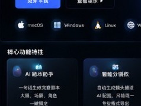
AI 剧本助手
一句话生成完整剧本：情节、场景、角色设定一次到位，支持多轮改写与版本管理。
面向短剧团队的 AI 创作平台：剧本、分镜、素材管理、多人协作一站完成。 Rust 驱动高性能工作流，支持 7 种语言与全平台覆盖。
开源可部署 · 支持 macOS、Windows、Linux 与 Web · Harness + PostgreSQL 企业级架构
从灵感一句话到可交付分镜，OpenFlow 将策划、生成、审阅与协作收敛在同一工作区。

一句话生成完整剧本：情节、场景、角色设定一次到位，支持多轮改写与版本管理。
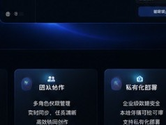
自动产出镜头描述与配图，统一画风，支持专业格式导出，缩短前期筹备周期。
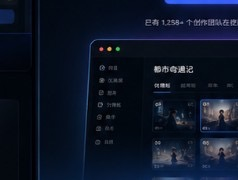
多角色权限、Workspace 隔离、实时任务与 WebSocket 推送，适合流水线式生产。
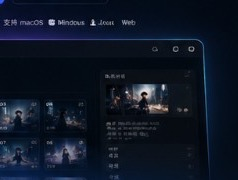
企业级数据安全：素材库本地可控，支持私有云与 Supabase 托管，满足合规需求。
Harness Engineering 统一 Agent、任务队列与可观测性，让 AI 生成可追踪、可取消、可协作。
小说/网文导入、项目立项、风格与模型路由配置
AI 编剧、场景拆分、角色与对白结构化
镜头板、资产生成任务、质量评审与版本对比
任务中心、发布面板、团队权限与用量统计
Flutter 跨平台客户端 + Rust 后端 API，桌面与 Web 体验一致；移动端能力持续扩展。
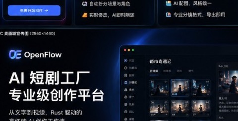
完整 Studio 工作区：分镜板、任务中心、质量评审与多窗口协作，适合产线团队常驻使用。
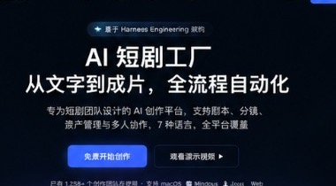
Flutter Web 与桌面同一套 API 契约，适合远程协作、审片与轻量创作，无需安装客户端。
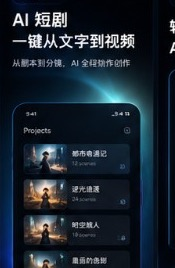
面向监制与运营的移动审阅：浏览分镜、批注任务、推送通知，与桌面工作区实时同步。
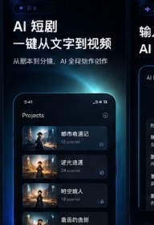
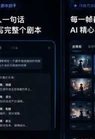
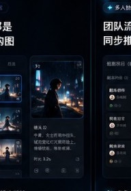
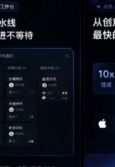
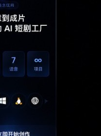
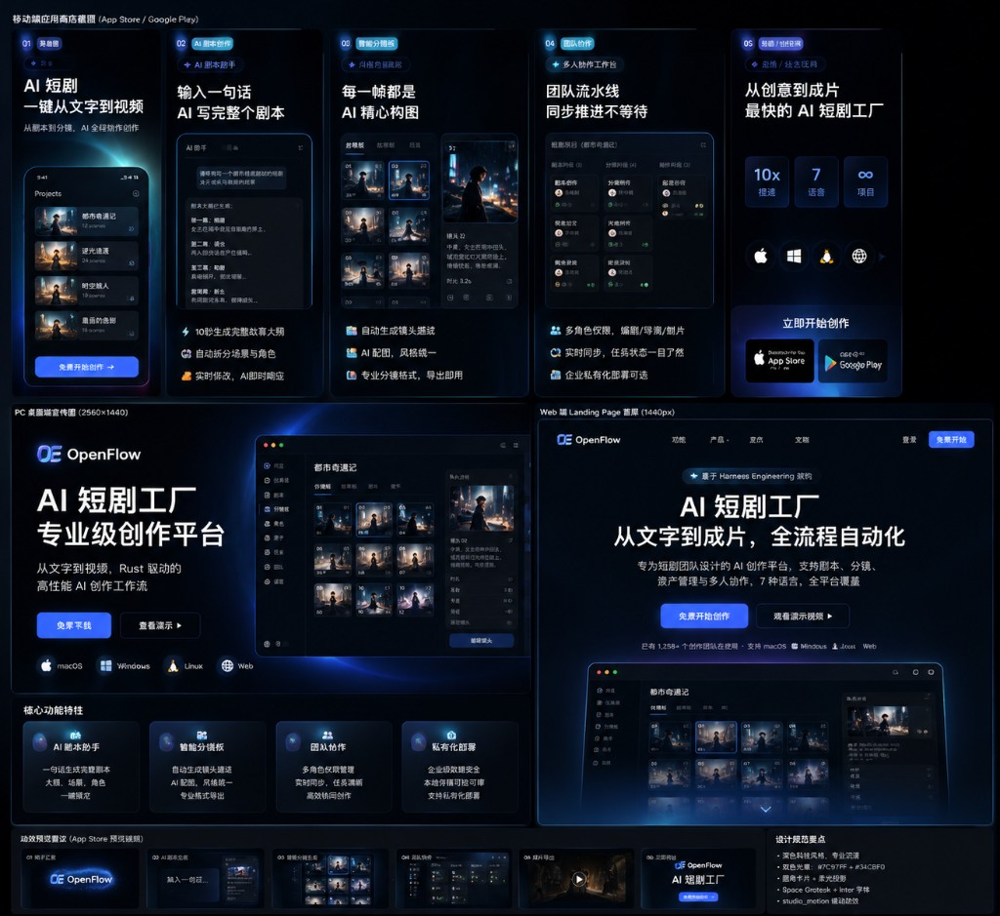
选择适合你的路径：下载桌面版、运行 Web 客户端，或从源码搭建开发环境。